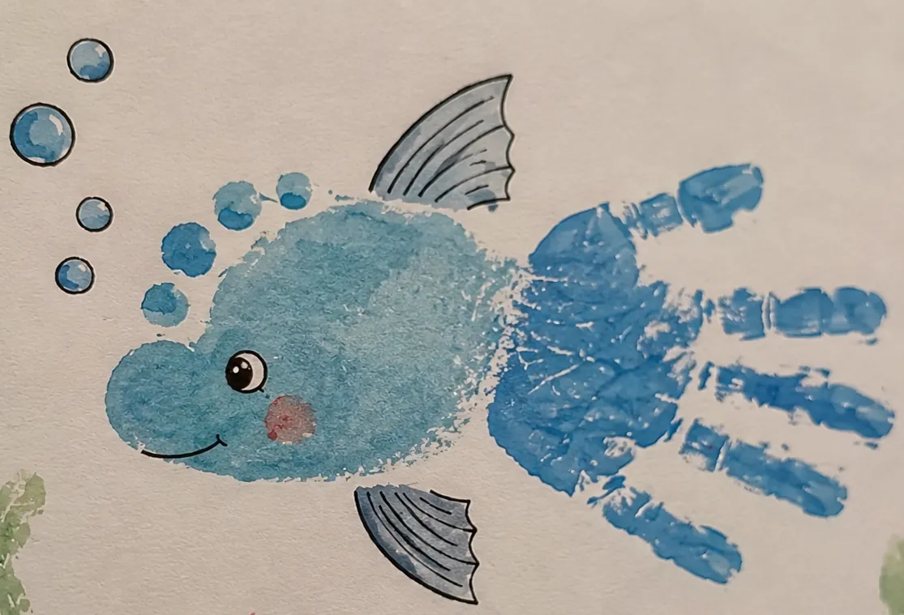

01
Artistes & mouvements
Découvrir une démarche artistique, en comprendre quelques codes puis s’en servir comme point de départ pour créer autrement.
Des ateliers pour découvrir des techniques, jouer avec les couleurs, les formes et les matières, comprendre autrement le travail des artistes et surtout faire l’expérience de la création. Ici, on ne cherche pas à reproduire parfaitement : on observe, on essaie, on transforme et on invente.

Chaque atelier part d’une idée, d’une technique, d’un artiste ou d’un phénomène visuel. Les participants découvrent quelques repères, puis passent rapidement à l’expérimentation.
Peinture, dessin, graphisme, motifs, abstraction, perspective, jeux de perception : les propositions évoluent selon l’âge du groupe, le lieu, la saison et le projet.
Des consignes suffisamment guidées pour donner un point de départ, avec assez de liberté pour que chaque réalisation reste personnelle.
Une programmation construite autour de plusieurs portes d’entrée dans la pratique artistique.
Découvrir une démarche artistique, en comprendre quelques codes puis s’en servir comme point de départ pour créer autrement.
Associer formes, lignes, rythmes et couleurs pour composer sans avoir besoin de représenter le réel.
Accumuler, répéter, varier l’échelle et faire naître une composition à partir d’un vocabulaire graphique simple.
Jouer avec le contraste, les lignes, les trames et les rythmes pour créer mouvement, vibration et illusion.
Comprendre comment l’œil lit l’espace et expérimenter des compositions qui donnent une impression de volume ou de distance.
Dessin, peinture, aquarelle, feutres, réserves, superpositions et techniques mixtes selon le projet proposé.
Certains ateliers s’appuient sur l’univers d’un artiste pour observer une manière particulière d’utiliser la couleur, la forme, le rythme ou la répétition.
Autour de Yayoi Kusama, par exemple, les pois, l’accumulation et la répétition deviennent un langage graphique à expérimenter. L’objectif n’est pas de copier une œuvre, mais de comprendre un principe et de se l’approprier dans une création personnelle.


Les formes géométriques, les lignes, les contrastes et les couleurs offrent un excellent terrain pour aborder l’abstraction. Une séance inspirée de Wassily Kandinsky permet de construire une composition sans dépendre du dessin figuratif.
Chacun choisit, assemble et équilibre ses éléments pour produire une image qui lui appartient.


Certaines séances quittent volontairement la représentation classique pour travailler la perception : trames, quadrillages, lignes qui se croisent, changements d’échelle, superpositions et contrastes.
On découvre comment quelques règles simples peuvent donner une sensation de profondeur, de mouvement ou transformer complètement la lecture d’une image.
Une même consigne peut produire des résultats très différents : c’est précisément ce qui fait l’intérêt de l’atelier.


Les ateliers peuvent être proposés aux enfants, adolescents, adultes et familles. Le contenu, la difficulté et les techniques sont adaptés au public et au contexte.
Découvrir, manipuler et développer son propre langage visuel.
Créer sans prérequis, expérimenter et s’accorder un temps artistique.
Partager une expérience créative et repartir avec des réalisations personnelles.
Associations, médiathèques, centres socioculturels, collectivités et autres structures accueillant du public.
Une découverte ponctuelle ou plusieurs rendez-vous pour aller plus loin et varier les techniques.
Une séance de 1h30 autour d’un thème ou d’une technique.
Plusieurs séances pour construire un parcours et approfondir les pratiques.
Une proposition pensée pour un événement, une saison ou un projet de structure.
Le matériel nécessaire à la réalisation est compris dans le tarif de l’atelier.
Ces formats disposent chacun de leur page dédiée.
Un univers pensé pour la petite enfance, autour des empreintes, de la couleur et de créations accessibles aux plus petits.
Découvrir Traces Magiques →Un atelier autour du portrait, de la couleur et de l’expression personnelle, conçu pour créer sans avoir besoin de savoir dessiner.
Découvrir Couleurs de Soi →Les ateliers sont proposés en petit groupe et peuvent être organisés selon le projet et le lieu d’accueil.
Consultez les tarifs des ateliers créatifs ou contactez L’Atelier de Macete pour une proposition adaptée.